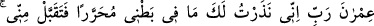
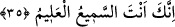

veya zındık olarak gelir. Çünkü çocuğun meydana geleceği nutfe bu gıdadan oluşmakta
böyle bir kimsede vücûd bulmaktadır. Sonuçta nutfe bulunduğu yere uyum sağlayacaktır.
Bu sebeple Peygamber Efendimiz (s.a.) “Çocuk babasının sırrıdır.” buyurmuşlardır.[34]
Meryem’in sıdkı ve Îsâ’nın nübüvveti, Meryem’in niyetinin sağlamlığı bereketiyledir.
35. İmrân’ın karısı şöyle demişti: “Rabbim! Karnımdakini azatlı bir kul olarak sırf
sana adadım. Adağımı kabul buyur. Şüphesiz (niyazımı) hakkıyla işiten ve
(niyetimi) bilen sensin.”
“Hani İmrân’ın karısı …. demişti.” Bu kadın, İmrân bin Mâsân’ın karısı, Meryem el-
Betül’ün anası, Îsâ (a.s.)’ın ninesi Hınne bint-i Fâkûzâ’dır.
Eğer, “İmrân bin Yashur’un da Meryem isminde bir kızı vardı ve Mûsâ ile Hârûn’dan
büyüktü. İmrân bin Mâsân’ın da Meryem el-Betül isminde kızı var. Meryem el-Betül’ün
babasının bu İmrân bin Mâsân olduğunu ve Mûsâ, Hârûn ve ablaları Meryem’in
babalarının İmrân bin Yashur olmadığını nereden biliyorsunuz?” diyecek olursan deriz
ki: “Onun, Betül’ün babası İmrân olduğuna delil olarak Zekeriya (a.s.)’ın kefil oluşu
yeter. Çünkü Zekeriya bin İzn ve İmrân bin Mâsân aynı asırda yaşadılar. Zekeriya,
İmrân’ın kızı, Meryem’in kızkardeşi İşâ’yı nikâhladı. Bu sebeple oğlu Yahya ile Îsâ
(a.s.) teyze çocukları oldular.
Rivâyet olunduğuna göre Meryem’in anası kısır idi ve ihtiyarlayıncaya kadar çocuğu
olmadı. Bir ağacın gölgesinde otururken yavrusuna yiyecek yediren bir kuş gördü.
İçinde bir çocuk sevgisi uyandı ve “Ey Rabbim! Benim sana şükür olarak bir adağım
vardır. Eğer bana bir oğul verirsen onu Beytü’l-Makdis’e adayacağım, oranın
hizmetçilerinden olsun” diyerek bir temennide bulundu. Bundan sonra Meryem’e hâmile
oldu. İmrân ise, Meryem ana karnında iken ölmüştü. İşte “Rabbim karnımdakini azadlı
bir kul olarak sana adadım” cümlesinde anlatılan budur. Nezr yani adak, insanın kendi
kendine vacib kıldığı şeydir.
Âyetteki “Karnındaki” ifadesi oğuldan kinâyedir. Ne olacağını bilmediği ve henüz
akıllılar derecesinde olmadığı için çocuk akılsız varlıklarda kullanılan “mâ” ile ifade
edilmiştir.
“Muharrer” âzâd edilmiş demektir. Beytü’l-Makdis’in hizmetine vakfedilmiş, tahsîs
edilmiş olarak sana adadım, anlamındadır. “Üzerinde elim yoktur.” Yani ondan elimi
çekeceğim, hiçbir hizmetimde çalıştırmayacağım, bir şeyle meşgul etmeyeceğim. Yahud,
sadece Allah için ve O’na ibâdet için, dünya ameli işlememek, evlenmemek, âhiret